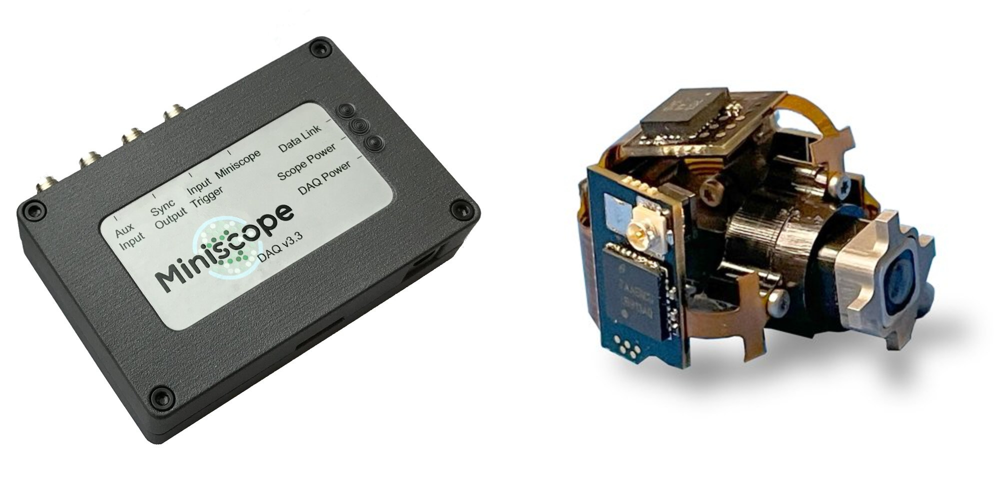
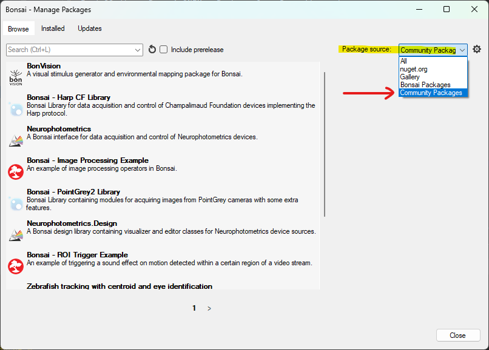
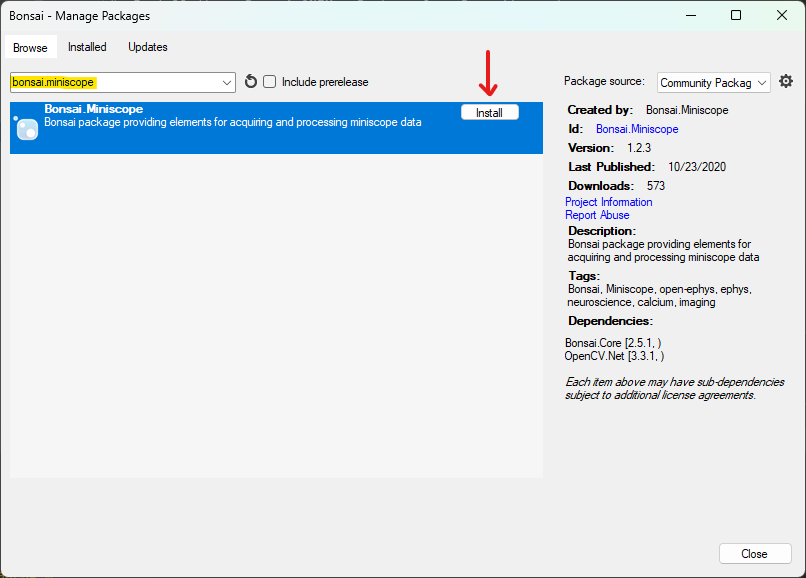

Miniscope DAQ and UCLA Miniscope v4#
We support automatic commutation with the Miniscope DAQ and UCLA Miniscope v4 in Bonsai.
The UCLA Miniscope’s own software Miniscope-DAQ-QT does not support automatic commutation.
You might be able to set up automatic commutation in other programmable applications that are able to acquire from the Miniscope DAQ and UCLA Miniscope v4 such as Syntalos . For guidance, refer to the Remote Control guide.
Bonsai#
This section outlines how to use Bonsai software to automate commutation of the coaxial tether between a UCLA Miniscope v4 mounted on a freely moving animal and a UCLA Miniscope DAQ.
Follow the Quick Start to ensure you can control the commutator using Bonsai.
Install the Bonsai.Miniscope Package from Bonsai’s package manager.
Select Community Feed
Install Bonsai.Miniscope

Mount the commutator and establish all electrical connections according to the information found in the Mounting and Connecting.
Download, configure, and run the following Bonsai workflow for automating commutation using orientation data from the miniscope’s on-board IMU sensor:

 miniscopedaq-miniscopev4-commutate.bonsai
miniscopedaq-miniscopev4-commutate.bonsai
Note
Be sure to configure the PortName property of the Commutator node to reflect the port to which the commutator is connected.
Run the workflow in Bonsai. If all above steps are correctly performed, the commutator will follow miniscope rotations